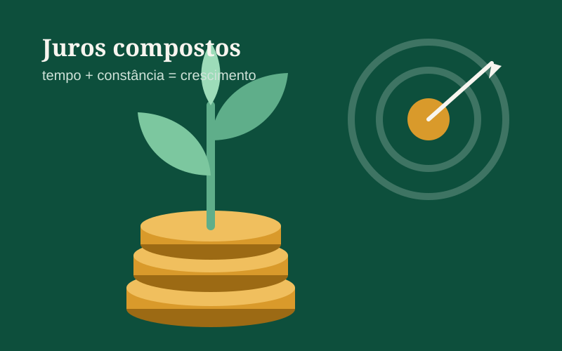

A ordem da sobra
Todo mês, o que sobra depois das contas tem quatro destinos possíveis. O FinanceR sempre segue esta ordem:
- Dívida atrasada ou cara. Juro de cartão e cheque especial cresce mais rápido do que qualquer aplicação rende. Quitar essas dívidas é o "investimento" com o melhor retorno garantido.
- Reserva de emergência. Seis meses do seu custo de vida, guardados num lugar seguro e com resgate imediato.
- Metas, pela data mais próxima. Viagem, notebook, entrada de um imóvel: cada meta recebe primeiro quem vence antes.
- Investir o que sobrar. Só então entra o longo prazo, como aposentadoria e independência financeira.
Reserva de emergência
A reserva é o que impede um imprevisto (desemprego, conserto do carro, problema de saúde) de virar dívida de cartão. A meta recomendada é de 6 meses de custo de vida. Se você gasta R$ 4.000 por mês, a reserva ideal é de R$ 24.000.
Como planejar uma meta
Uma meta bem definida tem três números: quanto, até quando e quanto guardar por mês. Exemplo:
| Meta | Valor | Prazo | Aporte mensal aproximado |
|---|---|---|---|
| Notebook novo | R$ 7.000 | 12 meses | ≈ R$ 550 |
| Intercâmbio | R$ 18.000 | 24 meses | ≈ R$ 680 |
| Entrada de um imóvel | R$ 60.000 | 5 anos | ≈ R$ 780 |
Os aportes já consideram um rendimento aproximado e servem só como referência. O app recalcula tudo com as taxas do dia e com a inflação, para que a meta seja medida em "dinheiro de hoje".
Quanto mais longo o prazo, mais o produto pode priorizar rendimento. Prazos curtos pedem resgate fácil; prazos longos aceitam títulos atrelados à inflação, como o Tesouro IPCA+.
Imposto de renda na renda fixa
Boa parte dos investimentos de renda fixa (CDB, Tesouro Direto) segue a tabela regressiva de imposto de renda: quanto mais tempo o dinheiro fica aplicado, menor a alíquota sobre o lucro.
| Tempo aplicado | Alíquota sobre o lucro |
|---|---|
| Até 180 dias | 22,5% |
| De 181 a 360 dias | 20% |
| De 361 a 720 dias | 17,5% |
| Acima de 720 dias | 15% |
Cada aporte conta o próprio prazo. Por isso o FinanceR calcula o imposto por lote: um aporte feito há dois anos e outro feito no mês passado pagam alíquotas diferentes, mesmo estando no mesmo título.
Juros compostos: o tempo é o principal ingrediente
Guardar R$ 500 por mês a 0,8% ao mês resulta em cerca de R$ 6.300 em um ano, R$ 38.000 em cinco anos e R$ 100.000 em dez anos. Em dez anos você aportou R$ 60.000; o resto é rendimento sobre rendimento. Começar cedo pesa mais do que começar com muito.
Aviso: este conteúdo é educativo e não é recomendação de investimento. Antes de aplicar, confira as taxas, os riscos e a garantia de cada produto.